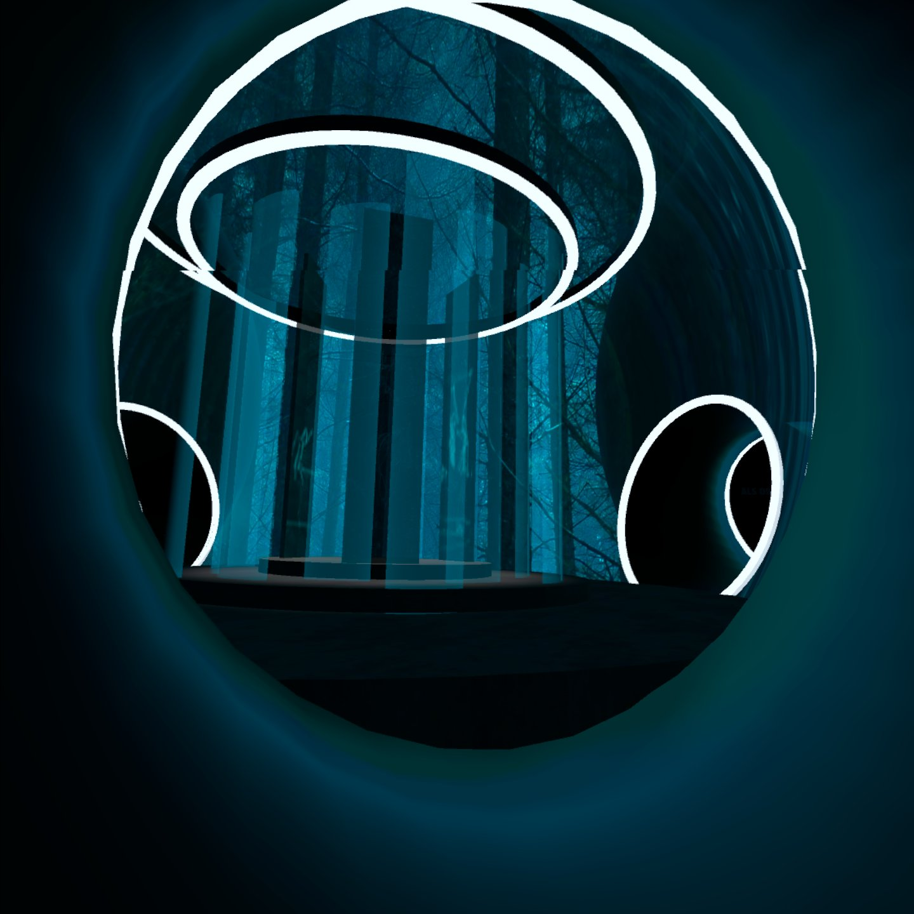
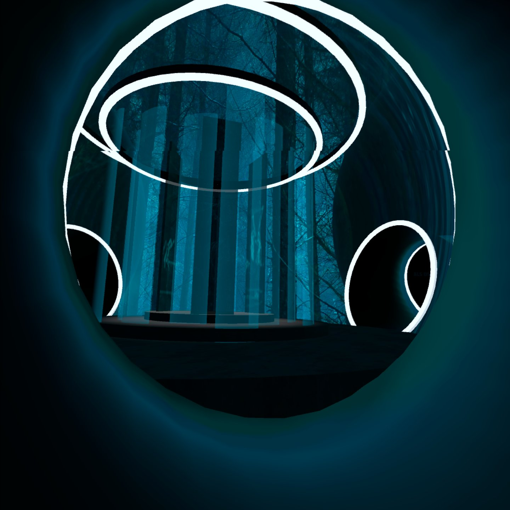

Erste Schritte...


Hey! Ich bin Theresa, Grafikdesignerin und Interfacedesign-Studentin. Schon früh habe ich gemerkt, wie sehr mich Gestaltung begeistert – besonders dann, wenn sie komplexe Dinge einfacher macht. Heute studiere ich Interfacedesign und kombiniere visuelles Gespür mit technischem Verständnis, um nutzerzentrierte digitale Lösungen zu entwickeln.
Mein Weg ins Design begann nicht klassisch, aber zielstrebig: Ein Schulpraktikum in einer Werbeagentur öffnete mir die Tür zu einer Welt, die mich sofort gepackt hat. Seither folge ich meiner Neugier – über eine gestalterisch ausgerichtete Berufsschule bis hin zu meinem heutigen Fokus auf UI/UX, 3D-Design und immersive Medien.


Den Großteil meiner Arbeitszeit verbringe ich in Figma. In Projekten mit mehreren Leuten übernehme ich dann die Erstellung von Komponenten und interaktiven Prototypen – Bereiche, in denen auch meine größten Stärken liegen. Ich experimentiere leidenschaftlich gerne im Screendesign, kenne mich aber ebenso mit den Material Design- und iOS-Guidelines aus. Aktuell arbeite ich mit den GNOME-Guidelines (Linux) und vertiefe mein Wissen in digitaler Typografie.
Ein Nanobot aus einem Design-Thinking Kurs über Zukunftstechnologien
Ein zentraler Schwerpunkt meines Studiums lag lange im Bereich Virtual und Augmented Reality. Für diese Projekte habe ich den Großteil der 3D-Modelle selbst in Blender erstellt – vom Modellieren über das Texturieren bis hin zur Lichtsetzung. Meine besondere Stärke liegt im Optimieren von Objekten für die Anforderungen von AR- und VR-Anwendungen.
Nachdem ich Prototypen in Figma erstellt habe, greife ich hin und wieder auch selbst in den Code ein. Ich arbeite mit HTML, CSS und schreibe kleinere JavaScript-Snippets, um Designs eigenständig umzusetzen und interaktive Elemente zu realisieren. Das hat den Vorteil, das für kleinere Änderungen, ein Projekt nicht hin und her geschickt werden muss, sondern ich es schnell selbst machen kann.
Vor einiger Zeit habe ich erstmals einen Kurs zum Thema Eye Tracking gemacht und dabei, unterschiedliche Software und Arten der Datenerhebnung kennengelernt. Das Zeil meines Projekts war es, verschiedene Arten der Navigation miteinander zu testen und zu vergleichen. Mithilfe von Eye Tracking konnte ich nachvollziehen, wie sich der Blick tatsächlich über die Oberfläche bewegte, welche Elemente sofort ins Auge fielen und welche fast vollständig übersehen wurden. Die Auswertung dieser Blickverläufe war für mich besonders spannend, weil sie nicht nur bestätigte, was bereits gut funktionierte, sondern auch verborgene Probleme aufdeckte, die durch rein subjektives Feedback schwer zu erkennen gewesen wären.


Seitdem nutze ich Eye Tracking gezielt im Designprozess, vor allem in frühen Testphasen, um die visuelle Hierarchie, Nutzerführung und Informationsgestaltung zu evaluieren. Es hilft mir dabei, meine gestalterischen Annahmen mit echtem Nutzerverhalten abzugleichen – datenbasiert, direkt und oft überraschend. Besonders bei Interfaces mit vielen visuellen Reizen oder innovativen Interaktionen bietet Eye Tracking wertvolle Einsichten, die über klassische Usability-Tests hinausgehen. Für mich ist es ein Werkzeug, das den nutzerzentrierten Designansatz konkret erlebbar macht – und mich in meiner Rolle als Gestalterin näher an die echte Nutzung bringt.
Tobii Pro Fusion 120 Hz
Remote Testing
Tobii Glasses
Eine Bildschirmaufnahme aus dem Testlauf. Der/ die Probant*in sollte einen Kurs über Blender so schnell wie möglich finden.
Bild aus der ersten Planung des Bloom- Projektes
Jaja Teamwork - mir ist durchaus bewusst, dass das der Softskill von ungefähr jedem Menschen ist. Darum will ich kurz beschreiben, wie für mich gute Teamarbeit aussieht:
Jeder hat andere Aufgaben, Stärken und Hinergünde. Diese anzuerkennen und wertzuschätzen ist in meinen Augen fast schon der Schlüssel für ein erfolgreiches Gruppenprojekt. Hinzu kommt eine gute Kommunikation auf Augenhöhe. Ich persönlich mit nicht der größste Fan von großen Meetings, daher ist es für mich umsowichtiger einen Kanal zu haben, indem man mit den VErantwortlichen direkt sprechen kann, gleichzeitig aber alle updaten und auf dem neusten Stand behalten kann.
Das ist ein Aufgabenbereich der mir in vielen Gruppenarbeiten automatisch zugeteilt wird. Ganz happy bin ich darüber nicht immer, vorallem wenn ich dadurch weniger Hand ans Design anlegen kann.
Ich bekomme die Organisation meist deswegen, weil ich ein echt gutes Zeitmanagement habe. Das gelingt mir aber auch nur deswegen, weil ich den Arbeitsaufwand für einzelne Teilaufgaben gut einschätzen kann - das macht die Planung schon wesentlich einfacher!
„Was bedeutet Usability?" (Bloom- Projekt)
In einer Welt die gerade so im Wandel ist, kann man es sich fast nicht leisten, sich mit dem angeeigneten Wissen zufrienden zugeben. Neue Tools, Techniken und Ansichten, all das gilt es zu beobachten und sich schrittweise anzueignen.
Mein aktueller Lernbereich fokussiert sich auf barrierefreies Design, besonders im Hinblick auf Seheinschränkungen. Außerdem arbeite ich schon seit längerem an meinen Coding-Skills, um nochmehr meiner Designs wirklich umsetzen zukönnen und nicht nur Prototypen zu haben.
Figma ist mittlerweile meine Hauptsoftware für Screendesign und Prototyping. Auch kleine Illustrationen oder grobe Skizzen mache ich in der Software, bevor ich sie rüber zu Illustrator ziehe. Meine Stärke liegt im erstellen von Componants und variants, die ich dann in Prototypen nutze. Auch das Erstellen von interaktiven Prototypen ist eine meiner Stärken und eine AUfgabe die ich in Teamarbeiten häufig übernehme.


Adobe nutze ich schon ewig. Als ich mit 16 die Ausbildung zur Gestaltungstechnischen Assistentin angefangen habe, hab ich auch angefangen, Adobe zu nutzen. Mir ist eigentlich jede Anwendung vertraut, besonders aber Photoshop, InDesign, Illustrator, After Effects und Premiere Pro, da ich dort immernoch die meiste Zeit verbringe.
Unity ist meine Go-To-Software wenn es um VR und AR geht. Unity ist wesentlich einfacher und beansprucht wesentlich weniger Leistung im Vergleich zu zum Beispiel Unreal Engine. Somit habe ich den Vorteil, Prototypen wesentlich schneller zu testen.
Ich habe gute Kenntnisse in der Software und bin in der Lage eindrucksstarke Szenen zu bauen, Objekte zu animieren und Szenen für das jeweilige Endgerät zu optmieren.


 

Für VR und AR baue ich den Großteil meiner Modelle selbst, dafür nutze ich dann natürlich Blender. Dadurch dass ich meist nur Modelle baue, animiere ich nicht wirklich in der Software, sondern nutze sie nur für das Modellieren und Texturieren. Dafür bin ich aber gut darin, Objekte in der Dateigröße so klein wie möglich zu halten, damit sie in der AR und VR nicht zu viel Leistung beanspruchen.